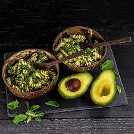

The Best Avocado Pasta
Ingredients
- 2 cup uncooked dry pasta any type
- 1 ripe avocado halved, seeded and peeled
- 1/4 cup olive oil
- 1/4 cup grated parmesan or romano cheese
- 1/4 cup fresh basil leaves or/and cilantro or parsley I used basil and cilantro and it was amazing!
- 2 cloves garlic
- 2 tablespoons lemon or lime juice
- Salt and freshly ground black pepper to taste
Instructions
- Cook your pasta according to the package. Drain well
- While the pasta is cooking, place the avocado, olive oil,parmesan cheese, garlic, cilantro, and lime juice in a blender or food processor and blend well. You can leave it chunky or process it until it's creamy.
- Toss the pasta with the avocado sauce. Season with salt and pepper to taste and top with parmesan or romano cheese, if desired. Enjoy!